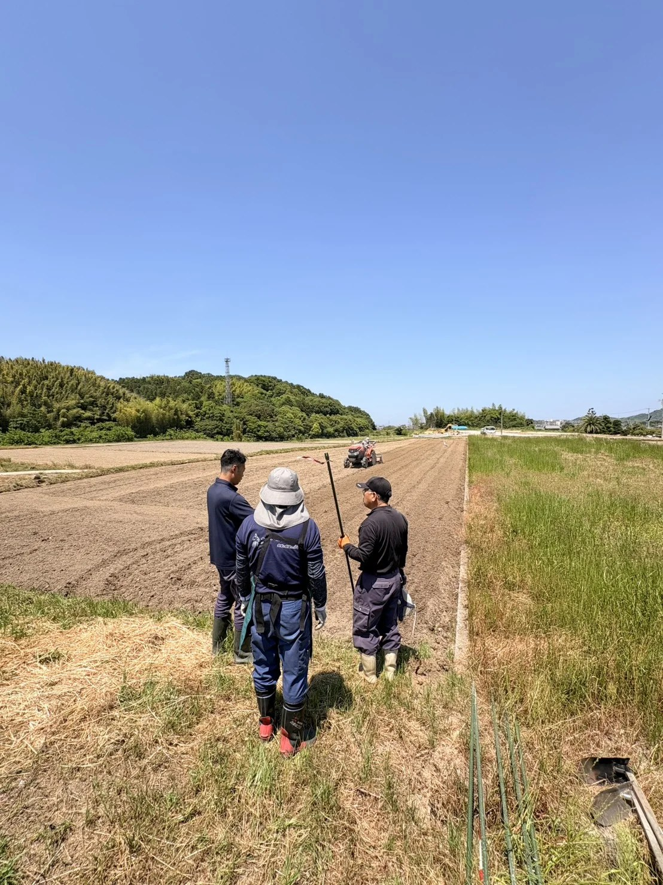

FeelFreeの農業活動の風景
05 / FEELFREE & FARMERS
売る手助けが、
続ける力に。
FeelFreeは、今治で地域活動に取り組むNPO法人です。私たちのミッションは、農業を若返らせること。
米づくりに向き合う農家の代わりに、販売の窓口と発信を担う。作り手のストーリーを届け、食べる人とのつながりを育てていきたいと考えています。
毎日のごはんが、
地域の農業を応援する選択に。
団体公式アカウント／米専用ではありません
米農家の方へのご案内を見る →